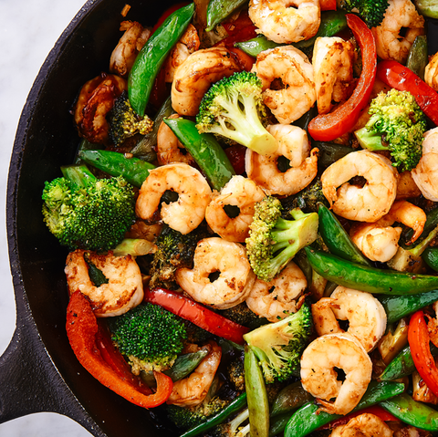

A fruity, cajun infused salad with succulent textures for a perfect lunch.
Ingredients
- 200g broccoli
- 1 onion (chopped)
- 3 carrots (diced)
- 1 can of water chestnuts
- 200g mange tout
- 1 bell pepper
- Olive oil
Method
- Heat a pan with olive oil
- Fry the vegetables at a high heat for 3 mins.
- Serve
Return to Top of Page
Return to Index